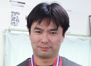

スタッフ - 研究協力者
博士後期課程３年 -博士前期課程２年 - 博士前期課程１年
学部Ⅰ部 - 学部Ⅱ部 - 研究生- 卒業生
■スタッフ
森田 良文 (教授)
|
| E-mail: morita@nitech.ac.jp |
佐藤 徳孝 (助教) |
鈴木 恵美子 (秘書)
Emiko Suzuki
■研究協力者
鵜飼 裕之 (学長就任予定)
Hiroyuki Ukai
不破 勝彦 (大同大学情報学部情報システム学科 教授)
Katsuhiko Fuwa
|  | 森 貴彦(岐阜工業高等専門学校電子制御工学科 准教授) Takahiko Mori |
打田 正樹(鈴鹿工業高等専門学校 講師) Masaki Uchida |
河野 託也(岐阜工業高等専門学校 講師) Takuya Kohno |
山崎 一徳(藤田保健衛生大学臨床工学科 助教就任予定) Yamazaki Kazunori |
原 進（名古屋大学大学院工学研究科 機械理工学専攻・准教授）
Susumu Hara
横山 清子（名古屋市立大学大学院芸術工学研究科・教授）
Kiyoko Yokoyama
小森 健司（作業療法士）
Kenji Komori
佐中 孝二（生体機構研究所・所長）
Kouji Sanaka
高尾 恵子（ハーベスト医療福祉専門学校・理学療法学科・理学療法士）
Keiko Takao
| Horofumi Tanabe | |
酒井 義人（国立長寿医療研究センター整形外科，整形外科医）
Yoshihito Sakai
伊藤 忠（国立長寿医療研究センター，理学療法士）
Tadashi Ito
平井 達也（田中会西尾病院，理学療法士）
Tatsuya Hirai
竹河 誠（春日井整形外科，作業療法士）
Makoto Takekawa
■博士後期課程３年
 |
酒井 昌夫 |
■博士前期課程2年
 |
西田 誠二 |
 |
中嶋 伸吾 |
 |
原 俊介 |
中村 英士 |
|
 |
鎌田 慶太 |
 |
芦田 圭史 |
 |
岡部 大輔 |
戚 其昌 | |
金 東君 |
■博士前期課程1年
大嶋 康太郎 |
 |
古井地 正義 |
|
 |
小林 広治 |
 |
戸谷 徳宏 |
 |
山路 崇仁 |  |
NGUYEN CONG CHU |
 |
犬塚 秀紀 |
韓 琳 |
■学部Ⅰ部
伊藤 雅俊 |
|
兼子 峻弥 |
|
|
澤井 泰彦 |
|
柴垣 浩明 |
武市 崚佑 |
|
森田 大輝 |
|
山内 大地 |
|
山田 彩加 |
■学部Ⅱ部
|
犬塚 秀紀 |
■研究生
芮 恒彬 |
韓 琳 |
■卒業生